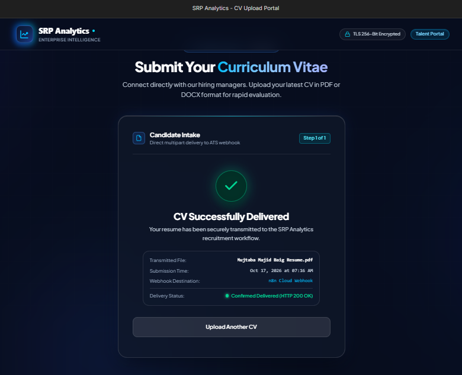
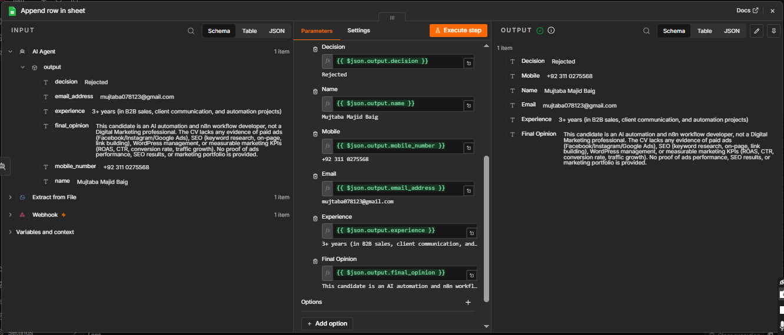

Projects / Recruitment / CV Screening Agent
HR · Recruitment
Recruitment / CV Screening Agent
A candidate uploads a CV on a portal; AI reads it, makes a decision and saves the result to Google Sheets.
The problem
A recruiter opening dozens of CVs for one role spends most of the time on people who do not fit. Notes end up scattered and the same questions are asked of every CV.
The solution
A CV upload portal sends each file to an n8n webhook. The workflow extracts the text from the PDF, and an AI agent compares it to the role and returns a structured result: decision, name, mobile, email, experience and a final opinion. Every candidate is saved as a row in Google Sheets.
How it works
- Candidate uploads a CV. The portal sends the PDF to an n8n webhook and confirms delivery.
- Extract the text. An Extract from File node reads the PDF.
- AI reviews the CV. An AI agent with a Groq model and a structured output parser returns the same fields every time.
- Save the result. A new row is appended to Google Sheets with the decision and the reasoning.
See it working



What the screenshots show
- The upload portal confirming that a CV was delivered.
- A candidate rejected for a digital marketing role, with the reason: the CV shows AI automation work but no ad, SEO or marketing results.
- The Google Sheets row built from the AI output.
A good fit for
- Small companies hiring without an HR team
- Recruitment agencies
- Any role that receives many CVs
Want something like this for your business?
Tell me what slows your team down. I will tell you whether it can be automated and how it would work.